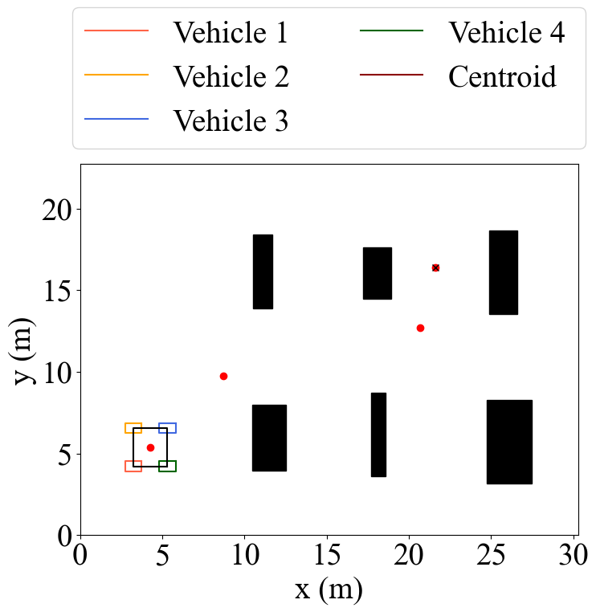
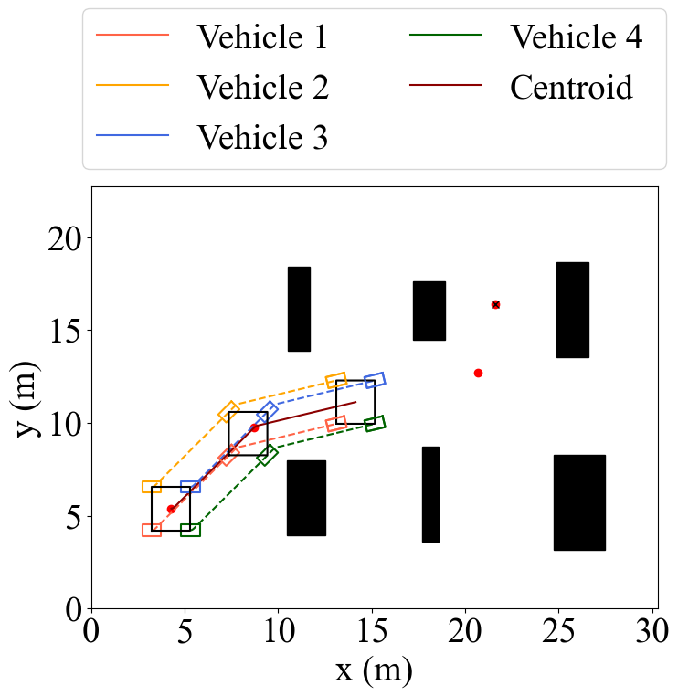
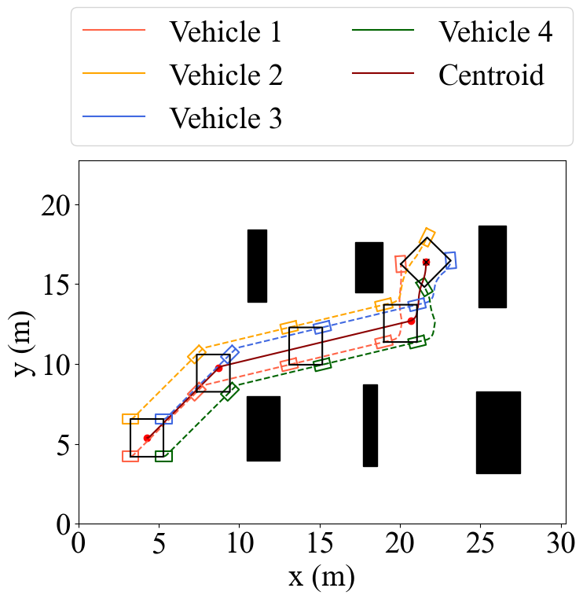
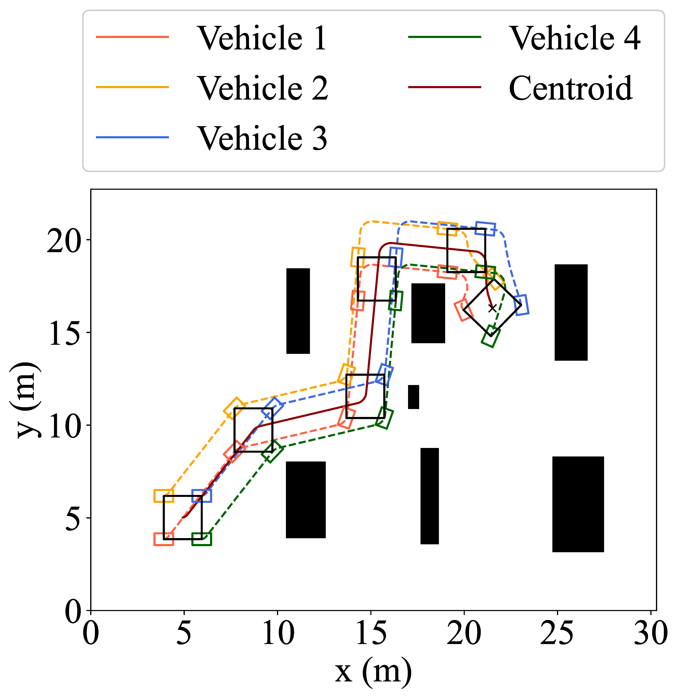
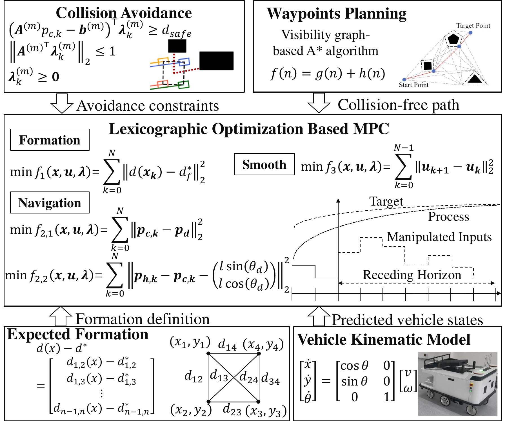
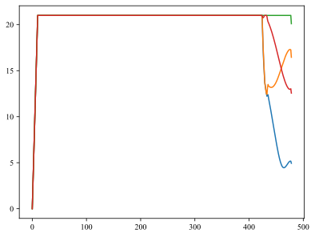

Lexicographic MPC / CasADi
字典序多机器人规划
用两层优化协调编队保持和目标导航。
- 研究问题
- 导航和编队目标发生冲突时，如何保护编队？
- 我的做法
- 先求编队，再用其代价上界约束导航。
- 实验效果
- 四机器人保持编队行进，并在发现新障碍后重新规划绕行路线。
编队行进与障碍重规划
红点是导航点，黑块是障碍物，彩线是四台机器人的轨迹。点击任一阶段图可放大。
场景 A · 无新增障碍
poly_map3 的三张阶段快照。观察编队怎样沿初始导航点穿过已有障碍之间的通道。

出发 · 四台机器人从左下方起步。 
行进 · 编队沿原导航点推进。 
后段轨迹 · 编队沿原路线转向。


场景 B · 行进中发现新障碍
动态障碍场景的三个阶段：发现新增障碍后更新导航点，编队沿上方通道绕行。

初始规划 · 按已有地图设置导航点。 
发现障碍 · 更新地图并重建前方导航点。 
绕行轨迹 · 编队沿更新后的路线继续前进。

整体框架与两层优化
- 先求编队。 在当前约束下最小化编队代价，记录所得代价。
- 再求导航。 将上一层代价加容差作为上界，在这一限制下优化导航。
发现新障碍后，系统更新避障约束和导航点，再进入两层求解。

编队误差与控制输入
- poly_map3 与 dyna_obs2 分别记录 393 和 479 个控制步，步长 0.1 s。
- 六个机器人对的平均绝对距离误差分别为 5.48 × 10⁻⁶ m 与 4.44 × 10⁻⁶ m。


